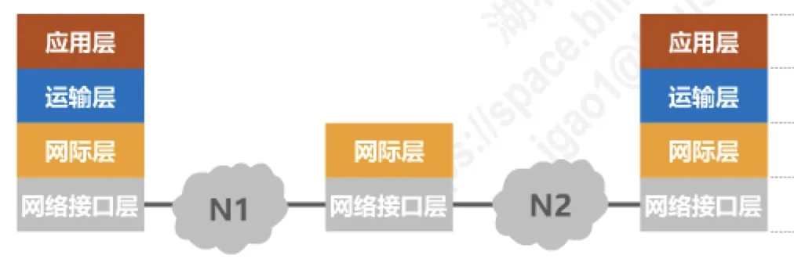
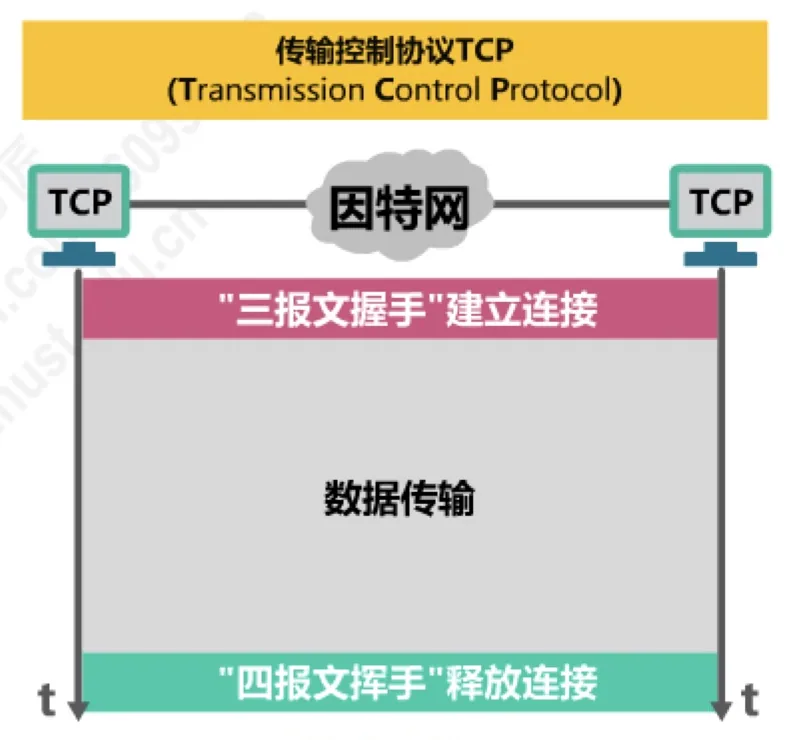
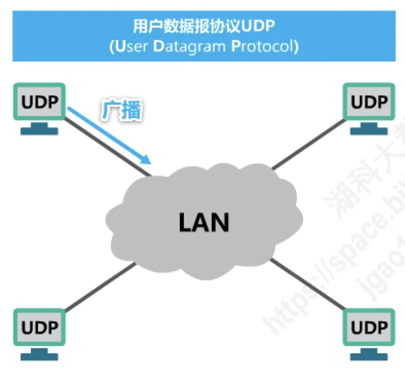
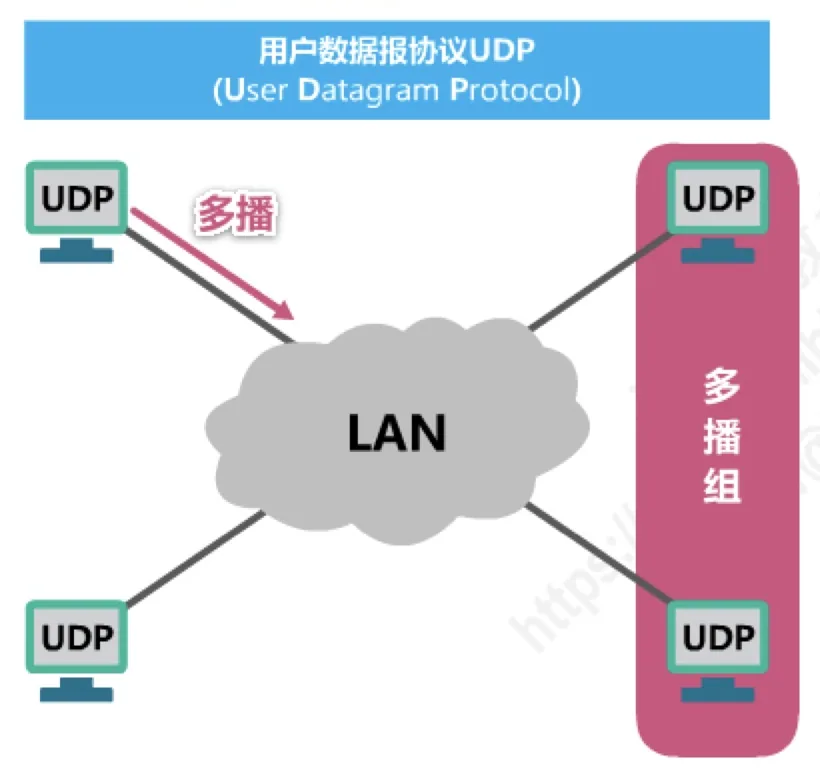
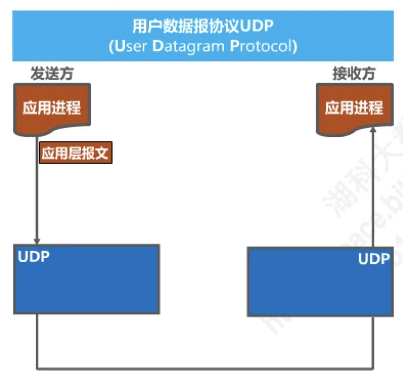
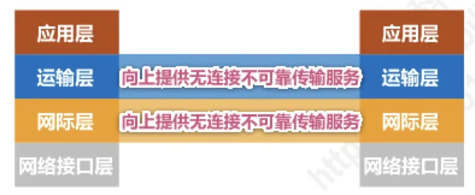
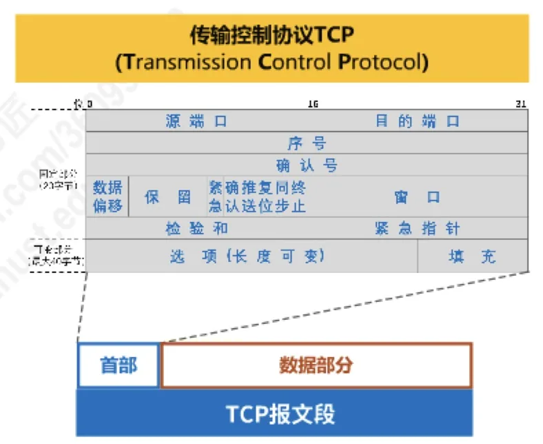

计算机通信与网络 · 第 5 章 运输层
5.3 UDP和TCP的对比
运输层有两个协议：用户数据报协议 UDP 和传输控制协议 TCP。它们一个极简、一个完备，几乎支撑了应用层的全部通信。本节把两者放在一起逐条对比：从连接方式、通信模式、数据看待方式，到可靠性和首部开销，最后给出一张完整的对照表，为后面几节分别深入 UDP 与 TCP 做好准备。
1. 运输层的两个重要协议
TCP/IP 体系结构的运输层中有两个重要协议，它们分别是用户数据报协议 UDP（User Datagram Protocol）和传输控制协议 TCP（Transmission Control Protocol）。这两个协议都建立在网际层 IP 协议之上，一起为应用层提供服务。

这张图能说明运输层与网际层的关系：向下看，IP 协议屏蔽了底层各种网络接口的差异，把不同的网络「粘」成一个统一的网际（IP over everything）；向上看，IP 只提供尽最大努力交付的数据报服务，是 UDP 和 TCP 在这一基础之上各自加工，才向应用层交出了两种风格完全不同的传输服务（Everything over IP）。
2. 无连接与面向连接
两种协议最根本的差别在于是否先建立连接（图 2）。
- UDP 是无连接的：发送数据之前不需要建立连接，把应用层交下来的数据加上首部就直接交给网际层发送，用完即走。
- TCP 是面向连接的：通信双方在传输数据之前必须先建立连接，这个过程称为「三报文握手」；数据传输结束后还要释放连接，称为「四报文挥手」。只有连接存在期间，双方才能传送数据。

「三报文握手」和「四报文挥手」的具体过程将在 5.8 节详细讨论，这里只需记住：对 TCP 而言，连接是通信的前提，而 UDP 没有这个概念。
3. 支持的通信模式：单播、广播与多播
连接方式又决定了它们各自能支持哪些通信模式（图 3、图 4）。


UDP 支持一对一、一对多、多对一和多对多的交互通信，也就是单播、广播、多播都能胜任；而 TCP 只能是一对一通信——每一条 TCP 连接只能有两个端点（endpoint，EP），一端发、另一端收，无法把一份数据同时送给多台主机。这个限制来自 TCP 面向连接的本性：连接既然是双方「谈」出来的，自然只能有两个当事人。
4. 面向应用报文与面向字节流
两种协议看待应用层数据的方式也不一样（图 5）。
UDP 是面向应用报文的：应用层交给 UDP 多长的报文，UDP 就照样发送，即对应用层交付的报文直接打包——既不合并，也不拆分。所以接收方 UDP 收到的每一个用户数据报都完整对应发送方应用层的一个报文，报文之间的边界被保留下来。这也是 UDP 程序必须自己处理「一次收多少」的原因。

TCP 是面向字节流的：TCP 把应用进程交付下来的数据仅仅看成是一连串无结构的字节流。它不关心这些字节属于哪个报文，而是按照自己认为合适的大小把它们划分成一个又一个报文段发送出去；接收方的 TCP 把收到的字节依次缓存起来，再按序交付给应用进程。因此对接收方的应用进程来说，看到的只是一条连续不断的字节流，发送方发了几次、每次发多长，TCP 并不保留这些边界。
5. 不可靠交付与可靠交付
这是两种协议在服务质量上最本质的区别（图 6）。
- UDP 向上层提供无连接不可靠传输服务。UDP 只是把数据交出去，对传输结果不作任何承诺。传输过程中如果出现误码或数据报丢失，UDP 的处理办法是「仅仅丢弃，其它什么也不做」；它不使用流量控制和拥塞控制。正因为不做这些额外工作，UDP 的时延小、开销低，适用于 IP 电话、视频会议等实时应用——这类应用宁可偶尔丢一点数据，也不愿因为等待重传而让声音或画面卡顿。
- TCP 向上层提供面向连接可靠传输服务。借助连接，TCP 在发送方与接收方之间构造出一条可靠信道，基于 TCP 连接的可靠信道上不会出现传输差错，包括误码、丢失、乱序和重复。为此 TCP 使用了确认、重传、流量控制和拥塞控制等一整套机制，自然也要付出更大的开销和时延，适用于要求可靠传输的应用，例如文件传输。

6. 首部开销
服务的完善程度直接反映在首部的复杂度上（图 7）。
- UDP 用户数据报首部仅 8 字节，只包含源端口、目的端口、长度和检验和四个字段，每个字段 2 字节，结构非常简单。
- TCP 报文段首部最小 20 字节，最大 60 字节。固定部分包含源端口、目的端口、序号、确认号、数据偏移、保留字段、六个标志位（紧急 URG、确认 ACK、推送 PSH、复位 RST、同步 SYN、终止 FIN）、窗口、检验和与紧急指针，另外还有长度可变的选项字段和用于对齐的填充字段。

两相对照，UDP 的首部开销只有 TCP 的四成不到，这正是它可以「快」的原因之一。TCP 首部中各个字段的含义与作用，将在 5.9 节逐一讲解。
7. UDP 与 TCP 对比总表
把上面六个方面收拢成一张表（表 1）：
| 对比项 | 用户数据报协议 UDP | 传输控制协议 TCP |
|---|---|---|
| 连接性 | 无连接 | 面向连接 |
| 通信模式 | 支持一对一、一对多、多对一和多对多交互通信 | 每一条连接只能有两个端点 EP，只能一对一通信 |
| 数据形式 | 面向应用报文，对应用层交付的报文直接打包 | 面向字节流 |
| 可靠性 | 尽最大努力交付，也就是不可靠 | 可靠传输 |
| 流量与拥塞控制 | 不使用 | 使用流量控制和拥塞控制 |
| 首部开销 | 仅 8 字节 | 最小 20 字节，最大 60 字节 |
需要说明的是，这张表列出的是「协议提供的能力」，而不是「实际效果」。UDP 本身不可靠，但应用层完全可以在 UDP 之上自己实现确认与重传，从而获得可靠性（例如 HTTP/3 使用的 QUIC）；反过来，TCP 虽然可靠，却会因为重传和拥塞控制带来额外的时延。选择哪一种协议，本质上是在时延、开销与可靠性之间做取舍。
本节小结
- 运输层有两个协议：UDP（User Datagram Protocol）与 TCP（Transmission Control Protocol），它们都建立在 IP 之上，向上提供风格不同的传输服务。
- UDP 无连接，支持单播、广播、多播（一对一、一对多、多对一、多对多）；TCP 面向连接，先「三报文握手」建立连接、再「四报文挥手」释放连接，只能一对一通信。
- UDP 面向应用报文，对报文直接打包，不合并也不拆分；TCP 面向字节流，把应用数据看成无结构的字节序列，不保留报文边界。
- UDP 提供无连接不可靠传输服务，出现误码、丢失只是丢弃，不使用流量控制与拥塞控制，适合 IP 电话、视频会议等实时应用；TCP 提供面向连接可靠传输服务，不会出现误码、丢失、乱序、重复，使用流量控制与拥塞控制，适合文件传输等应用。
- 首部开销：UDP 仅 8 字节（源端口、目的端口、长度、检验和）；TCP 最小 20 字节、最大 60 字节。后续将分别深入 TCP 的流量控制（5.4 节）、拥塞控制（5.5 节）、超时重传（5.6 节）、可靠传输实现（5.7 节）、连接管理（5.8 节）与首部格式（5.9 节）。